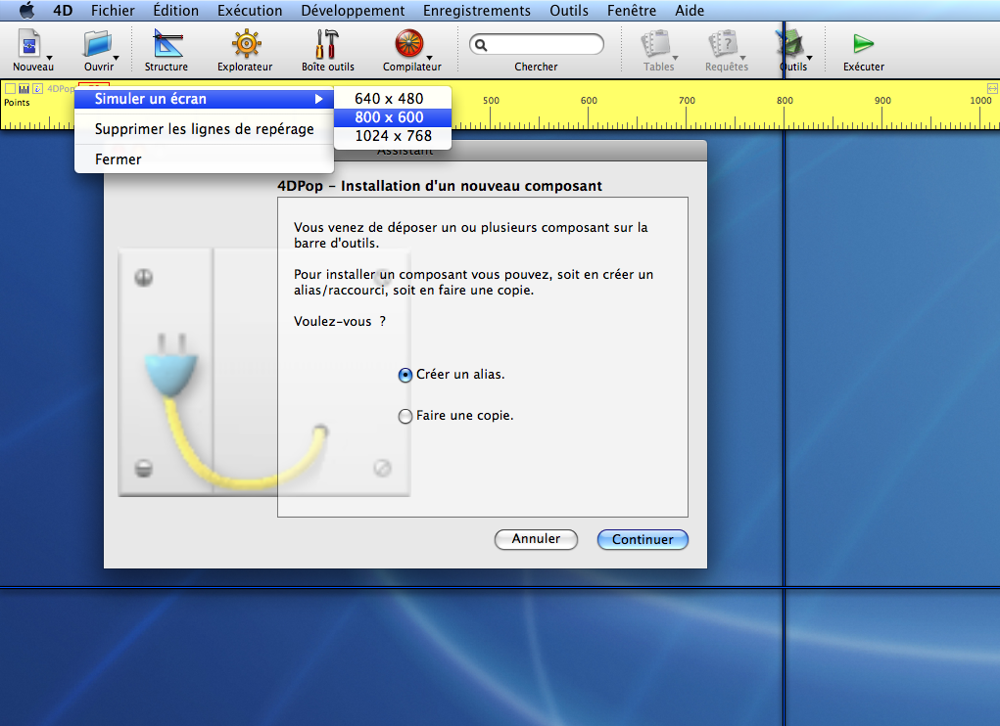
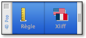

|
|
||||
4DPop Ruler est un outil qui permet d'afficher une règle à l'écran pour faire des mesures précises, en mode application, et ainsi "soigner l'interface".
|
|
||||
4DPop Ruler est un outil qui permet d'afficher une règle à l'écran pour faire des mesures précises, en mode application, et ainsi "soigner l'interface".
Placer le dossier "4DPop_Rulers.4dbase" ou un alias de ce dossier dans le dossier "Components" à côté de la structure de votre base de donnée.

Pour afficher la règle, exécutez la méthode "4DPop_ScreenRuler"
Si vous utilisez le composant "4DPop", l'outil règle apparaît automatiquement dans la palette d'outils, il suffit de cliquer dessus pour afficher la règle.
Par défaut une règle horizontale de 100 pixels est affichée en haut de l'écran sous la barre de menu ou la barre d'outils.
| Fermer la règle | |
| Basculer entre la règle horizontale et la règle verticale | |
| Afficher une page d'aide | |
| Redimensionner la règle | |
| + Opt/Alt dimensionnement automatique à la taille de l'écran |
Pour déplacer la règle, cliquez dans une zone vide
Vous pouvez créer une ligne de repérage, en cliquant dans une zone vide de la règle tout en maintenant la touche Option sur Macintosh ou Alt sur PC.
La ligne de repérage est verticale si la règle est horizontale et vice-versa.
Les lignes de repérage sont conservées lors de la bascule règle verticale/horizontale. Elles sont toutes supprimées à la fermeture de la règle.
Le nombre de ligne de repérage crée n'est pas limité.
En cliquant sur une ligne de repérage, vous pouvez la déplacer, en maintenant la touche Option/Alt la ligne est effacée.
En cliquant sur le libellé "4DPop" vous faites apparaître un menu d'actions :
La ligne "Simuler un écran" permet de placer une ligne de repérage verticale et une autre horizontale délimitant un écran virtuel choisi parmi les 3 tailles courantes proposées.
La ligne "Supprimer les lignes de repérage" permet de supprimer toutes les lignes en une seule fois.
Ce composant est fourni en version compilée, mais vous trouverez le code source dans le dossier "Sources" à l'intérieur du dossier du composant.
Un forum pour 4DPop est disponible à cette adresse : Forum 4DPop